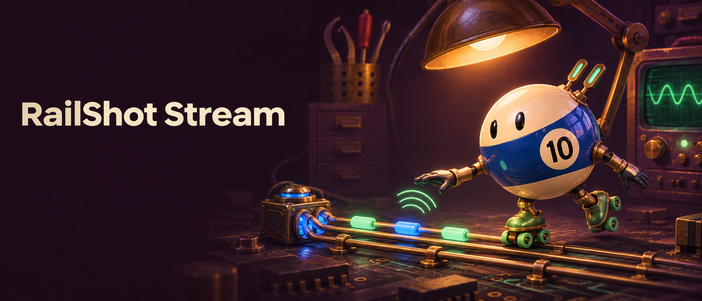
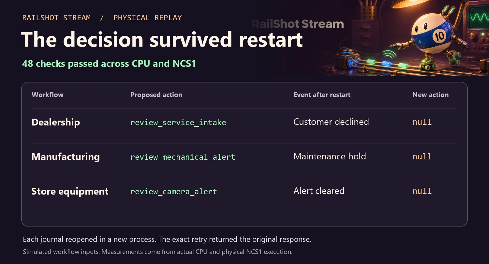

RailShot Stream
Ordered, restartable text decisions. RailShot runs MagicEightBall on CPU or the original Intel Neural Compute Stick and commits each accepted fragment and result to SQLite before replying.

Replay a process restart
Choose one of three authored workflows and step through its recorded CPU or physical NCS1 run. After the restart, the exact retry returns the stored proposal. The next fragment contains a veto that clears it.
Loading recorded requests…
| Recorded event | Stream and sequence | Text fragment | Returned result |
|---|
All 48 checks passed across the two backends. A separate physical run accepted exactly 131,072 tokens and recovered after rejecting an append that would have reached 131,073.

Run the v0.1 preview
The package includes the portable ONNX graph, compact NCS1 archive, and the dealership, manufacturing, and store-equipment policy banks. The preview stores input text and decisions in a local journal.